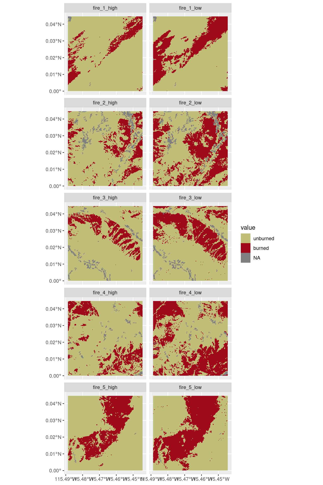

Tommaso Trotto & Jen Baron (tommaso.trotto@ubc.ca)
Published
October 19, 2024
Introducing landscape patterns
Landscape patterns and their quantification has received considerable attention since the early 1980’s. The quantification of landscape patterns came from the need to objectively describe landscapes that humans assess subjectively as, for example, “clumpy”, “dispersed”, “random”, “diverse”, “fragmented”, or “connected” (Gergel and Turner (2017)). Quantification of pattern is fundamental to many of the relationships we seek to understand in landscape ecology, because they emphasize the interactions among spatial patterns and ecological processes. Therefore, a basic familiarity with the most commonly used ways to quantify these patterns is extremely important (Gergel and Turner (2017)). In general, we refer to these as landscape metrics. Landscape metrics allow us to objectively describe landscape patterns based on certain observable features, which enable analyses such as:
Assessment of landscape pattern changes over time
Making future predictions regarding landscape pattern changes
Determining if two landscape differ based on their patterns
Evaluating alternative lands management strategies in terms of the landscape patterns that may result
Determining if a certain pattern is characteristic of a specific disturbance
In particular, in this lab we will take advantage of both R- and python-based libraries to objectively quantify landscape patterns to answer specific research questions. Both these libraries are inspired by FRAGSTATS (McGarigal (1995)). More in details, we will explore the use of landscape metics to compare spatial patterns created by 5 different fires (Figure 3) using landscape metrics. Furthermore, we will focus on comparing spatial patterns of fires of different severity to see how they produce different spatial responses on the landscape.
Note that one core assumption that these and other methods take is that the input data source is a 2-dimensional (2D) categorical raster. A categorical raster is a raster product that describes homogeneous landscape features with integer numbers (Figure 1). This assumption is fundamental for the calculation of landscape metrics as they all base their equations on individual pixels. We will explore this aspect more in depth later on. However, it is often the case that you’d need to convert your continuous raster product into a categorical raster. The simplest way to do it is to define a threshold value where pixels above or below such threshold are assing a class or another. Conversion is a crucial step in the calculation of landscape patterns, because the selection of the threshold value would affect how the quantification of the landscape patterns of interest.
Figure 1: Simulated landscapes representing 3 categories/classes (urban, agriculture, and forest) and their change over time.
Another important concept to understand is neighboring. When working with landscape metrics, individual pixels and their neighbors are both important. Take for example Figure 2, we are working with the central pixel marked with a cross. How do we define a uniform patch or region? Do we consider only the pixels north-south and west-east, or do we also consider the diagonals? This is important because by changing the neighboring rule we change how patches, and therefore metrics, are interpreted and calculated. For example, using a 4-neighboring rule, the patch would have an areas of 5, whereas using an 8-neighboring rule it would have an areas of 9!
Here, we will calculate landscape metrics from a categorical fire severity map using both R- and python-based solution. In R we are using the landscapemetrics library (Hesselbarth et al. (2019)), in python pylandstats (Bosch (2019)). Our objective is to describe landscape patterns created by 5 fire events of varying severity in Greater Yellowstone. Let’s start by importing libraries and data. In the following chunks, only the R code is evaluated because is more user-friendly than the python alternative as of today.
Code
import numpy as npimport xarray as xrimport pandas as pdimport rioxarrayimport pylandstats as plsfrom glob import globfrom functools importreduceimport matplotlib.pyplot as plt# import fire rastersfires =sorted(glob('data/fire*.tif'))lands = [pls.Landscape(fire, nodata=99, neighborhood_rule=8) for fire in fires]# plotfig, axes = plt.subplots(5, 2, figsize=(10, 15))for i, fire inenumerate(fires):with rioxarray.open_rasterio(fire).squeeze() as src: src = xr.where(src ==99, np.nan, src) # fix plotting issues with pylandstats src.plot.imshow(ax=axes.flat[i])plt.tight_layout()plt.show()# explore 1 raster datasrc
Code
library(landscapemetrics)library(terra)library(dplyr)library(tidyr)library(ggplot2)library(tidyterra)fires <-list.files('data', pattern ='fire', full.names = T)# set NAflagflagged <-lapply(fires, function(f) { r <-rast(f)NAflag(r) <-99crs(r) <-'epsg:32612'# manually assing CRS because originally missinglevels(r) <-c("nodata", "unburned", "burned")return(r)})# plotggplot() +geom_spatraster(data =rast(flagged)) +facet_wrap(~lyr, ncol =2) +scale_fill_manual(values =c('unburned'='#c1be7a', 'burned'='#9f0a1a', 'nodata'='#ababab'))

Figure 3: Map of 5 fires in Greater Yellowstone of different severity
Code
# explore 1 raster dataflagged[[1]]
class : SpatRaster
dimensions : 165, 165, 1 (nrow, ncol, nlyr)
resolution : 30, 30 (x, y)
extent : 0, 4950, 0, 4950 (xmin, xmax, ymin, ymax)
coord. ref. : WGS 84 / UTM zone 12N (EPSG:32612)
source : fire_1_high.tif
categories : category
name : fire_1_high
min value : NA
max value : NA
Note how we have 2 classes and a “nodata” class. Class 1 represents unburned areas and class 2 represents burned areas. Class 99 is our nodata class. Now that we have some basic information on the landscape, we should check that everything is right. That is, check that the coordinate reference system (CRS) is right, and that we have the right number of classes. This is pretty straighforward. You would notice that the rasters have a CRS = EPSG:4326. In python you can check the CRS using src.spatial_ref. If the field is populated, explore it. In R, the landscapemetrics package offers the check_landscape function. So just type check_landscape(flagged[[1]]) to see if the first raster is ready to go.
Code
check_landscape(flagged[[1]])
layer crs units class n_classes OK
1 1 projected m integer 2 ✔
We see that the raster is ready to go!
List available metrics
The landscapemetrics package includes a function to show you all available metrics and filter them according to the characteristics of the landscape they conceptually describe. For help, have a look at the help page of the list_lsm() function. You would see the acronym and full name of all the available metrics, the type, and the level they are applied to. For example. we can calculate metrics at the patch-, class-, or landscape-level. The syntax is pretty simple. All metrics start with lsm_, followed by the level (p/c/l), and the function name. Some of these metrics have other parameters that can be passed (e.g. neighboring rule). In some cases, legacy parameters are carried forward, so you will end up with metrics that have both a neighbors and direction parameters. They mean the same thing, but for legacy purposes they are retained to this point. In case, give the same value to both to be sure they are interpreted as you would expect.
With pylandstats is a bit more tricky. You’d need to explore the online documentation or the properties of a Landscape object as it is generated using landscape = pls.Landscape(). By using dir(landscape) you can see the list of available properties associated with the object. However, for a more detailed description, refer to the online documentation.
Metric calculation
Let’s explore how to actually use the libraries. A metric of interest for fire is area.
Code
lands[0].area()
Code
lsm_p_area(flagged[[1]], directions =8)
# A tibble: 115 × 6
layer level class id metric value
<int> <chr> <int> <int> <chr> <dbl>
1 1 patch 1 1 area 1.08
2 1 patch 1 2 area 2121.
3 1 patch 1 3 area 0.09
4 1 patch 1 4 area 4.77
5 1 patch 1 5 area 0.09
6 1 patch 1 6 area 0.09
7 1 patch 1 7 area 0.09
8 1 patch 1 8 area 0.27
9 1 patch 1 9 area 0.09
10 1 patch 1 10 area 0.09
# ℹ 105 more rows
Here we see that the functions both output the area associated to each patch in the first landscape. In total, we have 115 patches identified using a 8-neighboring rule. Note that the python output is 0-indexed, whereas the R output is 1-indexed. The area values are unitless, so care must be taken when interpreting these metrics. We also see that there is a class column. This matches the length of our classes (1-2), so within each class, we have a certain number of patches. In particular, 49 patches for class 1 and 66 for class 2.
A great feature about the R library is that all metrics are returned in the same format. You will always have a tibble with the same number of columns and naming such that you can easily combine the output of different metrics into a single dataframe. In python, it’s a bit more complicated to do as values are either returned as dataframes or numbers.
What if we wanted to extract multiple metrics at a time. That’s another easy task! We can use the calculate_lsm function in the landscapemetrics package to calculate multiple metrics for a specific “level” and “type” (as defined by lsm_list()) or we can specify the what parameter for an ad-hoc list of metrics of interest.
Code
# all metrics by level and typepatch_level <-calculate_lsm(landscape = flagged[[1]], level ="patch", type ="area and edge metric")patch_level
# A tibble: 345 × 6
layer level class id metric value
<int> <chr> <int> <int> <chr> <dbl>
1 1 patch 1 1 area 1.08
2 1 patch 1 2 area 2121.
3 1 patch 1 3 area 0.09
4 1 patch 1 4 area 4.77
5 1 patch 1 5 area 0.09
6 1 patch 1 6 area 0.09
7 1 patch 1 7 area 0.09
8 1 patch 1 8 area 0.27
9 1 patch 1 9 area 0.09
10 1 patch 1 10 area 0.09
# ℹ 335 more rows
Code
# metrics of interestmultiple_metrics <-calculate_lsm(landscape = flagged[[1]], what =c("lsm_p_area", "lsm_p_para"))multiple_metrics
# A tibble: 230 × 6
layer level class id metric value
<int> <chr> <int> <int> <chr> <dbl>
1 1 patch 1 1 area 1.08
2 1 patch 1 2 area 2121.
3 1 patch 1 3 area 0.09
4 1 patch 1 4 area 4.77
5 1 patch 1 5 area 0.09
6 1 patch 1 6 area 0.09
7 1 patch 1 7 area 0.09
8 1 patch 1 8 area 0.27
9 1 patch 1 9 area 0.09
10 1 patch 1 10 area 0.09
# ℹ 220 more rows
With a similar logic, you can calculate a list of metrics of interest using the pylandstats by iteratively calling the methods of the Landscape object.
Code
# list of metrics of interestmoi = ['area', 'perimeter', 'perimeter_area_ratio']multiple_metrics = [getattr(lands[0], metric)() for metric in moi]reduce(lambda x, y: pd.merge(x, y), multiple_metrics) # merge because it's the same type and index
Note that we have calculated all patch-level metrics. If we wanted to “level-up” and calculate class-level metrics, sometimes it’s as easy as applying an aggregation function to patch-level metrics. For example the class-level area is given by the mean of the patch-level areas per class:
When calling np.allclose(np.mean(area_patch), area_class) we get True! In other cases the aggregation is a bit more tricky, but for class- and landscape-level metrics it’s always an aggregation of lower-level metrics.
Work on your own
Now that you have a sense of how landscape metrics work and how they can be calculated, it’s your time to explore some of these metrics in more depth! You are now tasked to quantify fire patterns using a series of landscape metrics we provide in addition to a set of metrics of your choice. Choosing which metrics to use could be a daunting task, but remember that a long list of metrics may result redundant as many metrics report values that are more or less correlated with each other. For example, a large patch is also likely to have a large perimeter, therefore you would select either one or another, not both. Otherwise, you can work with metrics that summarize the relationship between the two, for example using the perimeter-to-area ratio.
We think that a good initial approach to quantify spatial patterns of fire is by looking at the shape of the burned patches, their number, size, the proportion of the landscape they occupy, and how they are distributed in relation to one another (e.g. clumped/sparse). In particular, we are interested in looking at the following metrics (using the landscapemetrics package as reference):
Landscape-level metrics
: edge density (ED) and contagion (CONTAG)
Class-level metrics
: proportion of landscape occupied (PLAND), number of patches (NP), and mean patch size (AREA_MN)
To the list of this metrics, we ask you to provide 5 more additional ones to better explore the spatial pattern of fire in a way we are not able to capture using the metrics we proposed. Calculate these metrics for all fire rasters you have. This can be accomplished using a simple for loop in python or by feeding a list of rasters to the calculate_lsm function in R. Use a 8-neighboring rule for your metrics if applicable. You can conduct the analysis in the language you are the most comfortable with. Your coding skills are not subject to any grading in our labs.
Tip
Take a look at higher-level classes for the selection of your 5 new metrics as fires are likely to expand beyond single patches. Think about metrics describing shape complexity and aggregations when working with fires.
Question 1: Provide the rationale for each new metric that you selected for your analysis using a bullet point for each.
Question 2: Why may metric redundancy be an issue in the analysis of landscape patterns?
Working with continuous data
One thing we stressed at the beginning is that landscape metrics can only be calculated on categorical rasters. But what if we started with a continuous raster where pixels can take any number, say, from 1 to 2? That would be a problem. One simple workaround is establishing a threshold such that values above or below such threshold are assigned to a class or another. However, the way you set a threshold will influence the output you get, similarly to setting the neighboring rule. We have already encountered this threshold at the beginning of the lab, but we glossed over it.
In our lab example, fires can be detected using satellite-derived indexes that describe how “burned” a pixel is based on its spectral properties. In simple words, we look at how “bright” the pixel is in 2 wavelengths and we compare these values over time (Equation 1). An increase in dNBR may be indicative of a fire. The higher dNBR, the higher the severity of the fire.
Where NIR is the near infrared wavelength and SWIR is the short-wave infrared wavelength.
If you take a closer look at the metrics we computed earlier and plot them (Figure 4), you would notice that we have 2 threshold values, specifically for dNBR. A low threshold indicates that fires are characterized early, or when they are less severe. A higher threshold only characterizes high severity fires. A low threshold value results in a higher contagion value, indicating a higher aggregation level than high severity fires (mostly because we include lower severity fires as well), as well as less complex shapes as indicated by the lower edge density values. Similarly, class-level metrics indicate larger and more patches on average for the burned class. Inverse trends are expected for the unburned area class.
Figure 4: Plotted landscape-level and class-level metrics for fire under 2 different threshold values for dNBR
Question 3: Briefly describe using bullet points 3 main differences in spatial patterns that where characterized by the low vs. high dNBR thresholds. Refer to your 5 new landscape metrics in the answer.
Question 4: Briefly describe how a change in neighboring rule may affect the quantitative estimates of burn patterns. Did all metrics change in the same way?
Question 5: How does the choice of the landscape metrics and threshold affect the ecological interpretation of the burned patterns on the landscape?
Conclusions
We have explored the use of landscape metrics to understand landscape patterns and their change over time. New metrics are constantly developed, however their ecological meaning must be carefully assessed against the task at hand. In conclusion, while 2D landscape metrics are easy to understand and calculate, ecologists are getting more interested in 3D metrics (or “morphometrics”). To learn more, check out Lepczyk et al. (2021).
References
Bosch, Martı́. 2019. “PyLandStats: An Open-Source Pythonic Library to Compute Landscape Metrics.”PLoS One 14 (12): e0225734.
Gergel, Sarah E, and Monica G Turner. 2017. Learning Landscape Ecology: A Practical Guide to Concepts and Techniques. Springer.
Hesselbarth, Maximilian H. K., Marco Sciaini, Kimberly A. With, Kerstin Wiegand, and Jakub Nowosad. 2019. “Landscapemetrics: An Open-Source r Tool to Calculate Landscape Metrics.”Ecography 42: 1648–57.
Lepczyk, Christopher A, Lisa M Wedding, Gregory P Asner, Simon J Pittman, Tristan Goulden, Marc A Linderman, Jeanne Gang, and Rosalie Wright. 2021. “Advancing Landscape and Seascape Ecology from a 2D to a 3D Science.”BioScience 71 (6): 596–608.
McGarigal, Kevin. 1995. FRAGSTATS: Spatial Pattern Analysis Program for Quantifying Landscape Structure. Vol. 351. US Department of Agriculture, Forest Service, Pacific Northwest Research Station.